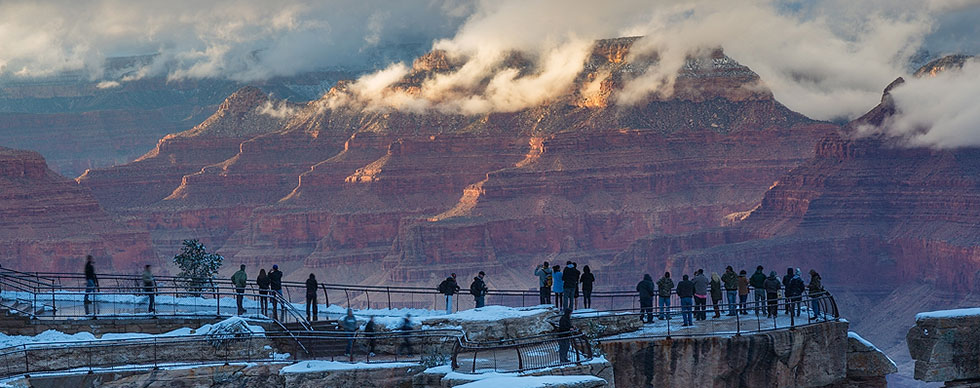

Grand Canyon National Park spans 277 miles of the Colorado river and adjacent uplands.
It is located entirely in northern Arizona.
Most visitors (90%) choose to see Grand Canyon National
Park from the overlooks along the South Rim.
The South Rim, which is the most accessible part of the park,
includes historic Grand Canyon Village, Hermit Road, and Desert View Drive.
The South Rim is open all year long, even on holidays.
A much smaller number of people (10%) see the canyon from the North Rim of the park.
The North Rim lies just 10 miles across the canyon from the South Rim,
but it is a 220 mile, or approximately 4.5 hour drive by car, all the way around the canyon.
It has a shorter season, with lodging and restaurants that are open from May 15 through
October 15 each year.
Fees
Private Vehicle: $25
Pedestrian, Motorcyclist, Bicyclist: $12
Admission is for seven days and includes entrance to both
South Rim and North Rim.

Free Entrance Days
The National Park Service offers free entrance days several days a year.
Typically, days with free entrance are holidays like
Martin Luther King Jr. Day, Presidents Day Weekend, Veterans
Day, and several others. For more information, visit:
www.nps.gov/findapark/feefreeparks.htm
For more information on Annual, Active Military, Senior and
Access passes and fees:
www.nps.gov/grca/planyourvisit/fees.htm
Other fees such as reservation, camping, lodging, tours,
concession and fees collected by third parties are not included
unless stated otherwise.
Park Hours and Seasonality
Park Entrances: Open 24 hours a day
North Rim Facilities: Open mid-May and close in mid-October
Desert View Campground: May 1st through mid-October
South Rim Facilities and Grand Canyon Village: Open all year
While park entrances are open 24 hours a day, stations are not always manned.
Accessibility
Many of the facilities at Grand Canyon are historic and were built before current accessibility standards were set.
The terrain is rugged with narrow, rocky trails and steep cliffs. Visitors using
wheelchairs or who have visual impairments may need assistance. For more information, please visit www.nps.gov/grca/planyourvisit/accessibility.htm
Pets
Pets are permitted in the park if leashed, but not below the rim, in park lodging, inside
buildings or on buses, with the exception of service animals. People who want to take a
service animal below the rim must check in at the Backcountry Information Center.
There is a kennel for dogs and cats at the South Rim, open 7:30 a.m.-5:00 p.m. daily.
www.nps.gov/grca/planyourvisit/pets.htm